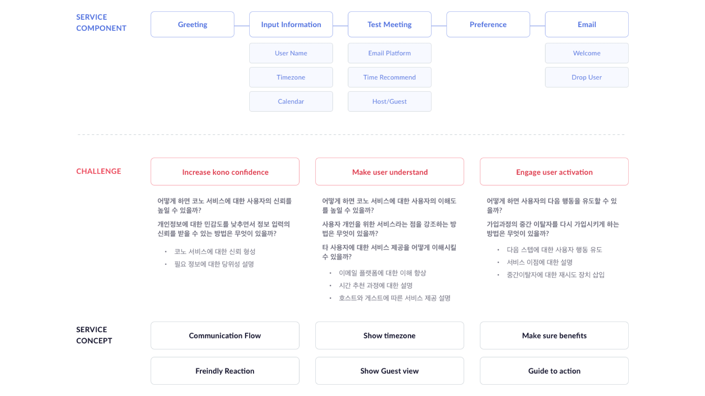

2017
The reason why the team started the renewal project was based on a panel analysis from landing to activation user for two weeks after the beta version was opened, with an average sign-up completion rate of 25% of the members entering and testing subscription information on the onboarding, and PM raised a problem for the middle-of-the-roader.
The project was carried out with the aim of increasing the subscription completion rate and activation by redesigning the subscription and testing as a combined.
Assist Senior UX Designer, Design(Visual, Prototyping)
To draw a new on-boarding process, we took a look at the components needed in the subscription process, conducted an identification with senior designers and PM, and drew out a service concept.
Since it is a service that is responsible for schedule management, personal information is a sensitive issue, so it was important to build trust between users and services.
We wanted to show that it is an artificial intelligence service in an interactive way, and to explain how to create a schedule to build trust with users and encourage service testing.
Senior UX designers designed the overall service UX flow and drew a wireframe based on it.
Considering the flow of the flow, I thought it was clear what I wanted to convey to the user for each element. And I thought about the design concept, considering how information is placed on each screen and whether it drives users to do the next thing.
Because on-boarding process is conducted in dialogue, I considered font and color combinations that instill a soft image and enhance legibility.
In addition, to facilitate communication with developers, the design guide was organized to create a design system that would deliver consistent services across multiple platforms and upgrade services.
I wanted to reduce eye fatigue and focus the user's attention on the important contents with pastel-like background. The point color wanted to give a bright image while giving trust in blue.
Although I had less time to work on the design due to internal issues, I was able to complete the design that I worked with the developers to work together. After applying the new on-boarding, the subscription completion rate rose to 80%.